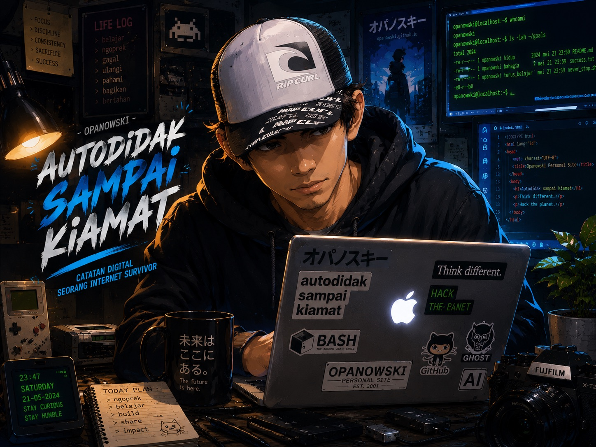

Kadang yang kelihatannya sepele di luar — ternyata paling pusing kalau lo nggak ngerti teknis. Ini catatan perjuangan gue selama 2 hari penuh merombak website Bunker Opanowski. Mulai dari pindahin semua gambar ke server sendiri, memperbaiki file HTML yang kepotong, sampai berantem sama warna ungu default browser yang gak mau hilang.
📸 Masalah #1: Gambar Numpang di Imgur, Bukan di Rumah Sendiri

Gue awalnya simpan gambar di Imgur. Gampang, tinggal tempel link. Tapi risiko gede: kalo suatu hari Imgur hapus atau down, website gue bakal kehilangan muka — literally. Gambar gak muncul, malu dong. Jadi gue putusin: pindahin semua gambar ke folder images/ di GitHub. Milik sendiri, aman, dan nggak tergantung pihak luar.
🤯 Bukan cuma pindah — ini medannya:
- Download satu per satu 17 gambar dari Imgur.
- Rename file: Ini bikin kepala muter. Huruf besar/kecil beda, angka 1 vs huruf l, 0 vs O, huruf Z kecil vs z besar. Satu karakter beda = gambar gak muncul. Gue rename sampai beberapa kali bolak-balik.
- Upload ke folder images/ di GitHub
- Ganti link di semua file HTML — dari
https://i.imgur.com/xxxx.jpgjadiimages/xxxx.jpg. Ratusan link, manual, satu per satu.

"Rename 17 file satu per satu, bolak-balik cek huruf besar kecil... ini bukan coding, ini meditasi."
📦 Masalah #2: File HTML Kepotong di Tengan Jalan
Selama diskusi sama 3 AI (Claude, Gemini, ChatGPT), beberapa kali file index.html yang dikirim kepotong di bagian bawah. Begitu upload ke GitHub, sebagian konten berharga (filosofi, perjalanan, aset, arsip) lenyap gitu aja. Untung gue punya backup file lokal — gaya lama tapi nyelametin.
Pelajaran penting: jangan pernah commit langsung tanpa cek panjang file. Kalau ragu, bandingin sama file lama yang utuh.

"Konten yang udah gue tulis berjam-jam — raib begitu aja karena file kepotong. Untung ada backup lokal. Lesson learned keras banget ini."
🎨 Masalah #3: Warna Ungu yang Membandel (Paling Bikin Puyeng)

Di halaman depan, ada card "Latest Update". Semua warna normal — kecuali teks preview beberapa artikel berwarna ungu gelap. Gue ganti dari #b57bee ke #d0a0ff, pusing, karena ternyata itu bukan dari kode gue — itu dari browser.
Browser punya default warna ungu gelap untuk link yang sudah dikunjungi. Dan teks preview di card itu sebenernya juga bagian dari link. Susah diakalin tanpa ngerusak struktur.

"Udah ganti warnanya berkali-kali, tetep ungu. Ternyata browsernya yang iseng — bukan kode gue. Ini baru namanya musuh tak kasat mata."
Akhirnya gue + Claude nemu cara:
- Card dibuat dengan background hitam pekat seragam (
#0f0f12) - Teks preview dipisah ke elemen
<p>dan dipaksa warna abu-abu terang (#b8c0cc) lewat CSS langsung - Warna border atas dibedakan (hijau, biru, putih) biar gak monoton.
- Warna ungu hilang total, semua teks jadi enak dibaca.

"Waktu ungu itu akhirnya ilang dan semua teks jadi seragam — rasanya kayak menang perang kecil yang udah seminggu bikin sakit kepala."

🤖 Masalah #4: Kolaborasi 3 AI Rawan Ruwet
Gue pake Claude (konsep & kode utama), Gemini (ringkasan & riset), dan ChatGPT (second opinion). Keren sih, tapi resikonya:
- Masing-masing AI punya gaya ngomong dan panjang kode yang beda.
- Kadang salah satu AI ngirim file yang kepotong tanpa sadar.
- Bikin proses muter-muter kaya pompa sedot tinja.
Solusinya: gue tetap jadi "pilot". AI cuma navigator — gue yang putusin kode mana yang layak upload.
🗂️ Pekerjaan Lain di Tengah Jalan (Yang Berhasil)
- Membuat 3 halaman Projects baru dari 0: Kandang Aviary, Mulsa Organik, TinyPC Debian.
- Memperbaiki link antarhalaman (index, blog, shared.css, projects, gudang).
- Menyatukan tampilan warna di shared.css biar konsisten.
📘 Babak Baru: Uji Coba Automasi latest.json
Setelah semua masalah teknis beres, gue berpikir: "Masa iya tiap nambah log baru, gue harus edit manual index.html?" Maka gue coba sistem automatis update dengan file latest.json.
Konsepnya sederhana: tulis 3 update terbaru di latest.json, halaman depan akan otomatis membaca dan menampilkannya. Tidak perlu sentuh HTML lagi. Secara teori, ini keren: modern, efisien, praktis.
🧨 Tapi kenyataannya:
- File
index.htmlyang diberikan AI kepotong berkali-kali. - Konten penting (sejarah hidup, aset, arsip) hampir hilang.
- Struktur halaman depan amburadul.
- Setiap perbaikan malah muncul masalah baru.
Gue sadar: "Kalau dipaksakan, website gue bisa kehilangan konten utama."

"Fix satu, muncul dua masalah baru. Fix lagi, file kepotong lagi. Gue hampir lempar laptop tapi untung ingat harganya."
🛑 Keputusan sulit: Batalkan Automasi, Kembali ke Statis
- ✅ Tidak jadi paksa sistem
latest.json - ✅ Tetap gunakan
index.htmlstatis yang sudah stabil - ✅ Update log terbaru dilakukan manual (hanya 3 entri)
Kelihatannya kuno? Mungkin. Tapi ini jauh lebih aman, tidak ada risiko konten raib, dan gue tetap memegang kendali penuh.
🧠 Apa yang gue pelajari:
Gak semua sistem automasi cocok buat website personal sekelas Bunker Opanowski, apalagi kalau resikonya kehilangan data.
🎯 Kesimpulan dari babak ini:
- Website tetap statis tapi stabil.
- Konten utama aman.
- Tidak perlu teknologi ribet untuk website personal.
- Keputusan berhenti di tengah jalan juga bagian dari perjuangan.
✅ Hasil Akhir (sampai siang ini)
- ✅ Semua gambar ada di folder
images/GitHub — mandiri, cepat, permanen - ✅ Teks preview di Latest Update abu-abu terang, enak diliat, kontras, tanpa ungu
- ✅ Website nggak ada konten yang ilang
- ✅ 3 halaman project sudah live dan terintegrasi dengan baik
- ✅ Log Harian dan navigasi sudah diperbaiki
- ✅ Gue makin paham GitHub dan CSS — meski tetap bukan programmer
🧠 Pencapaian yang Gak Kalah Penting: Mental
Gue bukan anak IT, bukan web developer. Kode pertama yang gue tau cuma HTML dari friendster dan Myspace jebot dulu. Tapi 2 hari ini gue belajar: autodidak itu bukan tentang pinter — tapi tentang nggak nyerah. Walaupun harus zoom gambar, rename 20 kali, sama diskusi sama AI tengah malam, dan akhirnya gagal di uji coba otomatisasi.
🎬 Penutup
Bunker Opanowski ini bukan cuma website. Ini adalah markas digital gue sebagai lifelong learner dari Ciracas. Dan markas ini sekarang lebih utuh, lebih mandiri, dan lebih gue daripada seminggu yang lalu.
Jadi kalau lo pernah ngerasa website lo 'kaku', nyoba-nyoba sendiri, atau pusing sama kode — inget aja: ada Om Opan di Ciracas yang juga pusing, tapi nggak berhenti sampe beres.

"Dua hari perang, banyak yang gagal, tapi website tetap berdiri. Bukan programmer — tapi Bunker-nya makin solid. Itu cukup."
— Om Opan, setelah 2 hari perang